Every stage tells a story, and every actor leaves a mark. This website is dedicated to the four seniors who became inspirations, mentors, and cherished friends throughout my journey in Teatro Aliwana. Thank you for the laughter, guidance, memories, and lessons that will forever remain with me long after the curtains close.
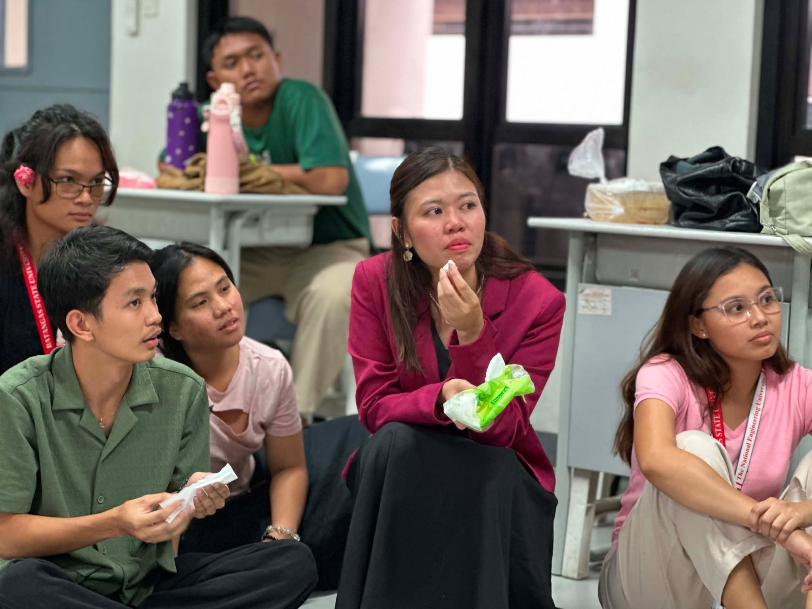
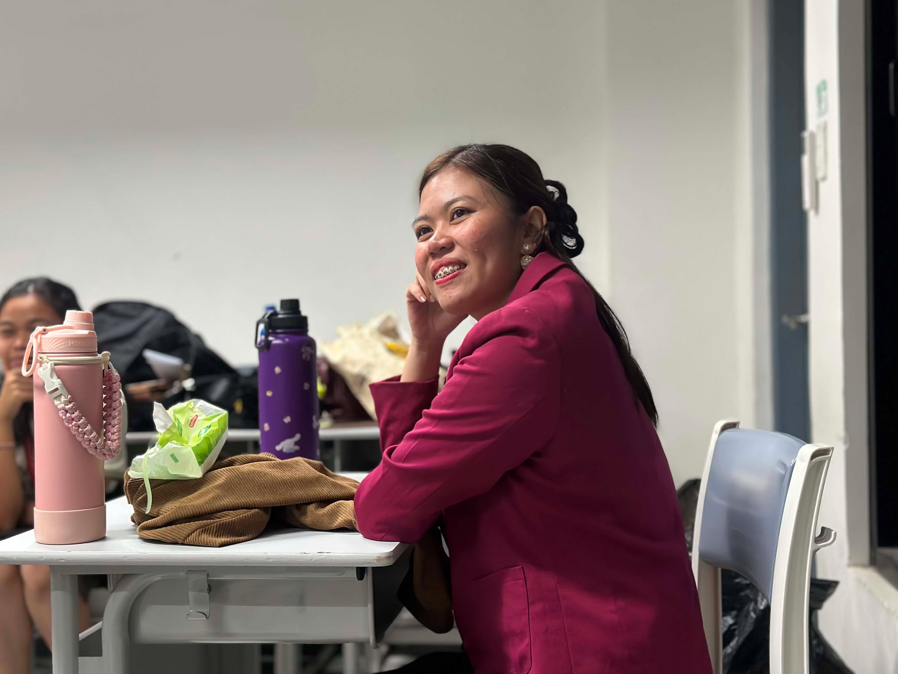
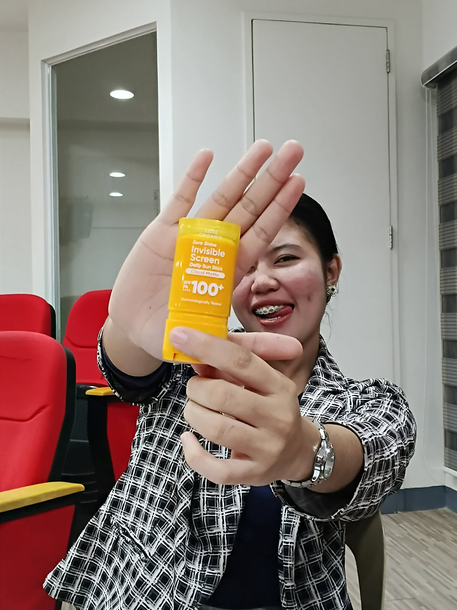
Dear Ate Jona,
I want to start this letter by saying that you are the reason why I joined Teatro Aliwana. During my first year, you visited our classroom to introduce TA, and from that moment, I was captivated. I admired the way you carried yourself, the way you spoke, and the confidence you showed in everything you did. There was something about you that truly intrigued and inspired me.
During my time in Teatro Aliwana, I had the opportunity to witness your leadership, your talent in acting, and the genuine care you showed to everyone around you. You created an environment where people felt valued and appreciated, and that is something I will always admire about you.
I am truly grateful that our paths crossed and that I had the chance to know you. Thank you for being an inspiration, for the lessons you unknowingly taught me, and for all the memories we shared. Those moments will always have a special place in my heart.
Thank you for everything. I will forever be thankful that I met you.
With love,
Mikka
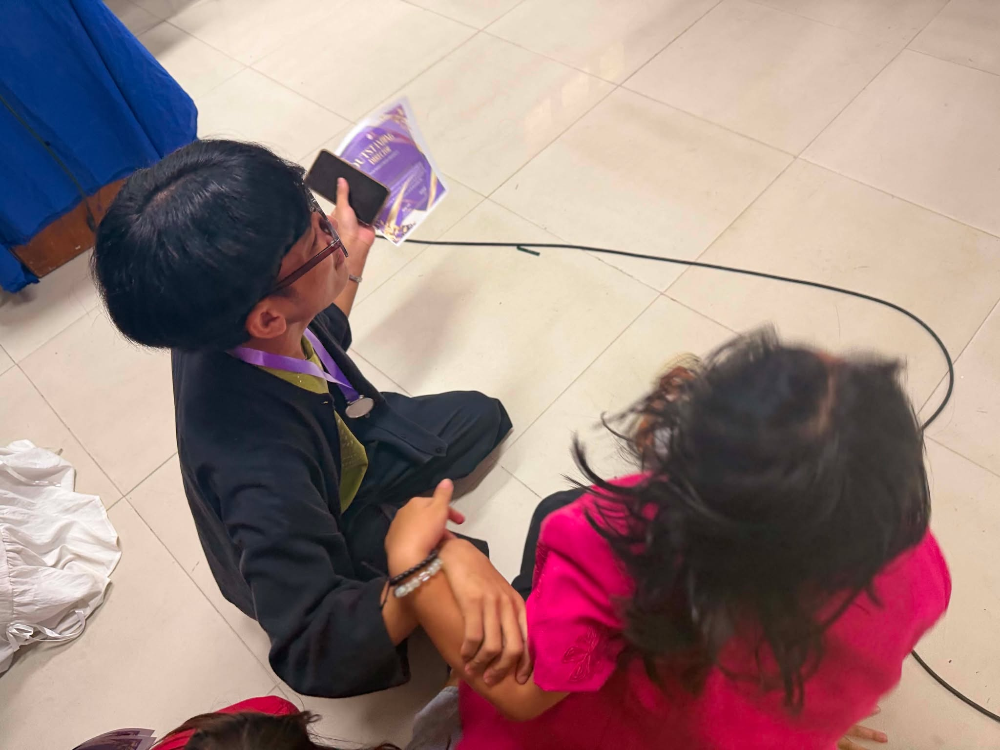
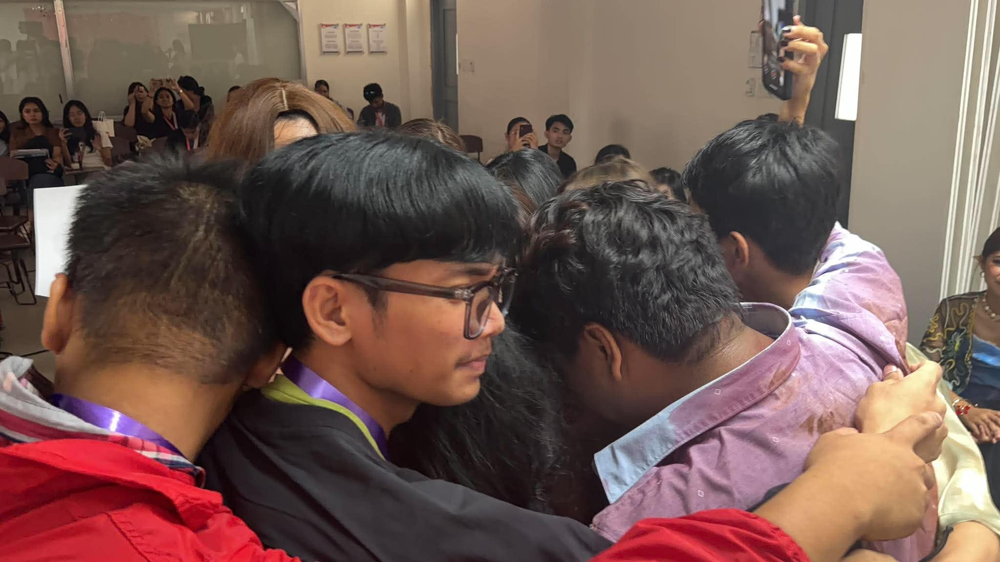
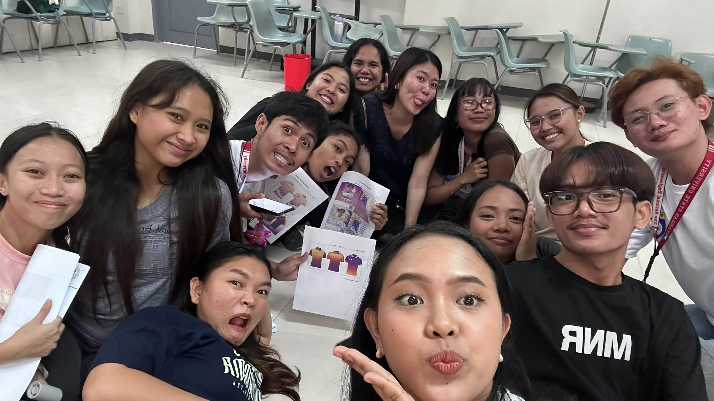
Dear Kuya Kim,
I want to start this letter by recalling the first time I met you. It was at SM, and you were with the TA babies. At that time, I honestly thought you were a first-year student because you looked so young. You definitely did not look like someone who was about to graduate.
We did not have many opportunities to interact, and we were never placed in the same group, so I never really got the chance to know you as well as I wanted to. However, during JAP, I was able to observe the way your team members looked up to you. I saw how much they trusted and relied on you, and that alone told me what kind of person you are. The respect and confidence they had in you spoke volumes about your character and leadership.
One of my regrets is that we did not get to spend as much time together compared to my interactions with the other seniors. Even so, I am grateful for the moments I was able to witness and for the impression you left on me. I know that you have a bright future ahead of you, and I am certain that you will continue to achieve great things wherever life takes you.
I hope that someday, whether in the near future or years from now, we will have the opportunity to bond and get to know each other better.
Thank you for your hard work, your dedication, and for simply existing. After all, you were the director behind the JAP production that brought home the victory, and that is something truly worth celebrating..
Wishing you all the best,
Mikka
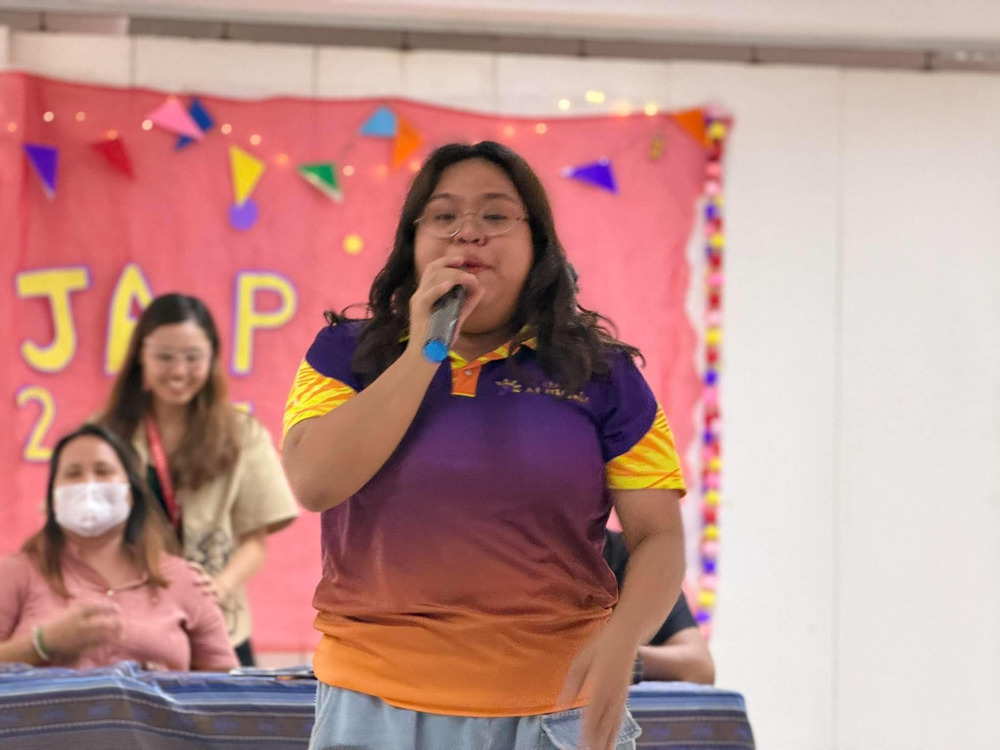
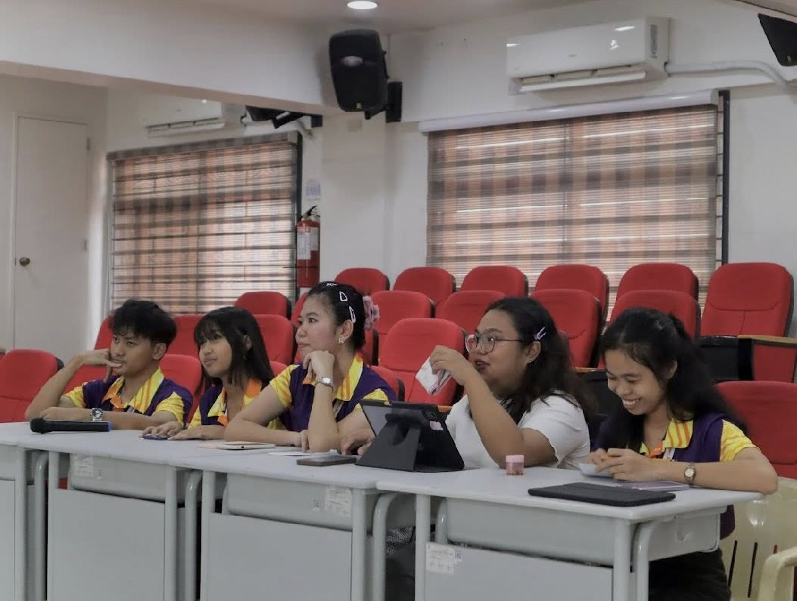
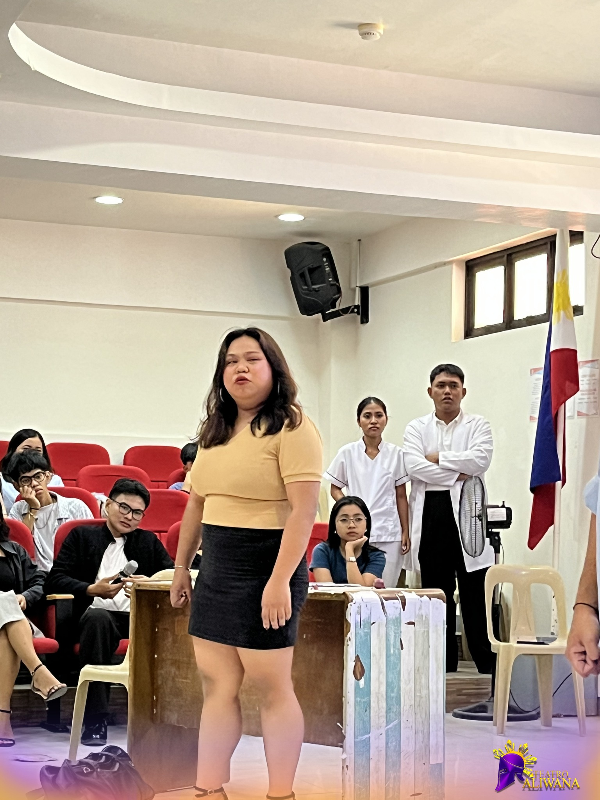
Dear Ate Kim,
I want to start this letter by thanking you for guiding me throughout my journey. You are one of the people I am most grateful for, and I will always appreciate the support, kindness, and encouragement you gave me.
I will miss our chikas a lot, Ate Kim. Whenever I think about our time together, so many memories come rushing back that I do not even know where to begin. From the simple conversations to the moments we shared in Teatro Aliwana, each one has become something I deeply cherish.
To be honest, I never realized that I would become so attached to you. Yet somehow, your presence became a part of my experience, and knowing that you will be moving on to a new chapter makes me both happy and emotional. Happy because you have come so far, and emotional because I will miss having you around.
I am incredibly proud of you for always doing your best and for everything you have accomplished. Your hard work, dedication, and perseverance are truly inspiring. Thank you for being someone I could look up to and for creating memories that I will carry with me for a long time.
As you continue your journey, I hope you achieve all the dreams you are working so hard for. You deserve every success and happiness that comes your way.
Thank you for everything, Ate Kim. I will always be grateful that I got the chance to know you.
With gratitude,
Mikka
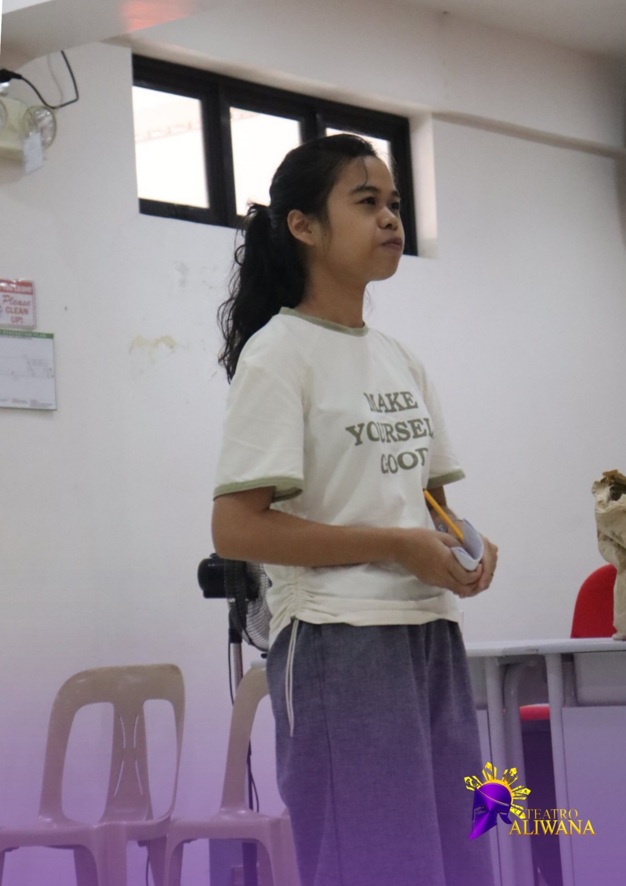
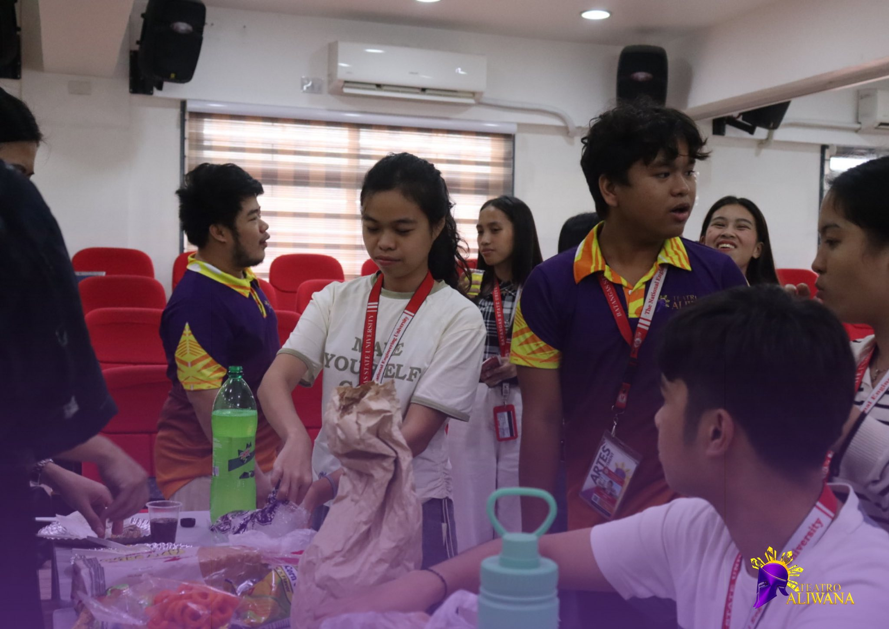
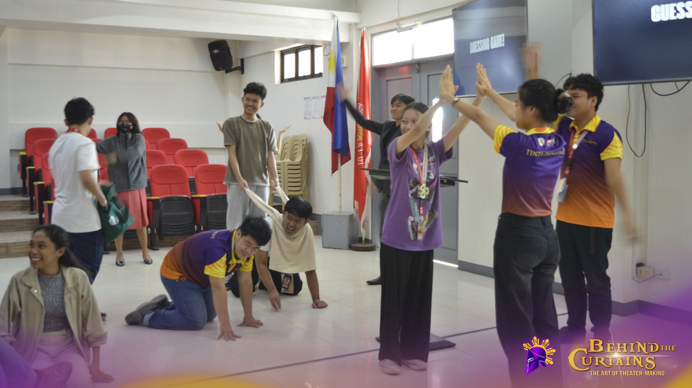
Dear Ate Steph,
I want to start this letter by telling you that you became my favorite person in Teatro Aliwana. From the moment I met you and had my first conversation with you, I already had a feeling that you would become someone I would look up to and admire.
I love how calm, quiet, and funny you are. There is something so comforting about your presence. I also admire the way you write; your words always seem thoughtful and meaningful. Because of that, I often found myself looking up to you. You became someone I deeply admired, even in the simplest ways.
There were moments when I would stay quiet and sit at the back while everyone else was dancing, singing, and enjoying themselves. During those times, I would notice you. You were often quiet as well, but I could see how much you were enjoying the moment. Seeing that made me realize that there are different ways to belong and have fun. In a way, it made me feel understood.
I wanted to be like you. I wanted to have the same calm confidence that you carry and to write with the same sincerity and beauty that your words have. Whether you realize it or not, you became an inspiration to me.
Thank you for every hug, every word of comfort, and every moment of kindness you shared with me. Those small gestures meant more than you could ever know. They helped me through moments when I needed reassurance, and they are memories that I will always treasure.
Thank you for being someone I could admire, learn from, and look up to. Meeting you was one of the things I am most grateful for in my Teatro Aliwana journey.
With appreciation,
Mikka